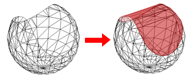
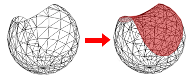
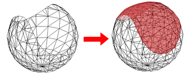

Geometry Inspector dialog box
You can inspect part, sheet metal, and assembly documents.
- Inspect
-
Specifies the geometry that you want to inspect. Options vary with model type.
-
All Active Models—Selects the models you have selected or all active models in the document.
-
All Mesh Bodies—Selects all mesh bodies in the document.
-
Select from Active Model—Prompts you to select one or more bodies in the currently displayed model.
-
Top level document—Selects the geometry in the top-level assembly.
-
Select occurrences—Prompts you to select one or more occurrences in the assembly.
-
Geometry from Active Simulation Study—Selects the geometry defined for the active study in Solid Edge Simulation.
-
- Go
-
Starts the geometry inspection process.
- For
-
Faults—Detects the geometry flaws listed in the table in Types of faults identified by the Geometry Inspector.
Small entities—Detects very small entities that may cause problems with a model during finite element processing.
When you select the Small entities check box, you also can select the specific entities to search for, and you can set the tolerance levels for the search.
- Faces
-
Specifies that model faces are searched using the following type and tolerance criteria.
- Small faces
-
Inspects the model geometry for small faces that completely fit inside a sphere with the specified radius.
- Fit in radius
-
Specifies the radius of the sphere used to find small faces. The value cannot be blank, zero, or negative.
- Slivers
-
Inspects the model geometry for sliver faces, which have a high aspect ratio and a small area. The edges in a sliver face form a complete loop.
- Sliver tolerance
-
Specifies the maximum width of a sliver face. The value cannot be blank, zero, or negative.
- Spikes
-
Inspects the model geometry for spikes, which have a high aspect ratio and a small area. Spikes differ from slivers in that only a portion of the face fits these criteria, not the entire face. Spike edges do not form a complete loop themselves, although they are part of the same loop.
- Spike width
-
Specifies the maximum width of a spike. The value cannot be blank, zero, or negative.
- By area
-
Inspects the model geometry for faces that have an area less than the specified size.
- Area less than
-
Specifies the maximum area to inspect.
The default value is x², where x is equal to 1 ⁄ 1000 of the model box diagonal.
- Edges shorter than
-
When searching for small entities, specifies the maximum length of the edges that are searched for.
- Results (expand the groups to see the individual nodes)
-
Displays information about faults and small entities found in the geometry. The information is stored in groups, which can be expanded in a tree structure for easy viewing.
The results vary with the type of document inspected and the inspection criteria. They include the document name, the number of faults and small entities, the fault names found, the types of small entities found, and the feature names where they occur.
When you select a fault or entity from the list, it is highlighted in the graphics window. When the model document is an assembly, only one occurrence is highlighted.
- Heal Body Faults
-
Removes faults from the bodies returned by the geometry inspector. This option is only enabled for body constructions or design bodies that do not have dependent features, or associative links.
An icon, , is displayed next to any faults returned by the Geometry Inspector that are not valid for healing, along with a description of the problem.
Note:The Heal Body Faults option does not support small entities, so an icon is not displayed next to any small entities returned by the Geometry Inspector.
- Result description
-
Displays the description of the geometry fault or small entity. To show this information, you must first select a fault name or a small entity name from the list.
- Fit
-
Fits the highlighted entities to the graphics window.
You can select a single entity in the Results list, and then use the Fit button to zoom in and fit it to the graphics window. You also can select a high level node in the Results list, for example, 13 Sliver Faces, and all 13 of the sliver faces are zoomed and fit to the graphics window.
- Save As
-
Displays the Save As dialog box for you to save the fault information list to an ASCII text file, with a .txt file extension.
- Mesh Body Healing Options
-
Removes defective facets in the meshed body.
- Delete Facets
-
This option deletes facets around fault while healing a faulty mesh. When this option is checked and mesh faults are detected, while healing body faults, facets around fault are deleted.
Note:Delete facets works only for mesh faults and not topological faults. This option is enabled only when mesh faults are identified by Geometry Inspector.
- Fill Holes
-
This option is enabled only when Delete Facets is enabled. When this option is checked, only the deleted facets around the fault get filled. There are four Fill Options to control the way holes are filled.
Note:The behavior of various options in dropdown for Fill Holes is similar to Fill Holes command on the Reverse Engineering tab.
- Fill Options
-
Tangent: Uses a similar method to Refined, but additionally maintains tangency of the mesh around the boundary of each hole.
Linear: Fills each hole without creating new mesh vertices in the interior of each hole.

Refined: Produces a similar shape to Linear but may introduce new mesh vertices in the interior of each hole to ensure new facets maintain approximately the same size as those nearby.

Curvature: Uses a similar method to Tangent but in addition adjusts the patch to maintain the general curvature of the mesh around the boundary of each hole.

How do I
Inspect the geometry of a modelOptimize the quality of a model
Learn more
Using Geometry InspectorLook up more details
Geometry Inspector commandOptimize command
Optimize dialog box